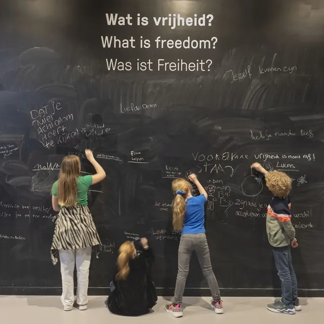

Nieuws ·
Herfstvakantie in het Vrijheidsmuseum

Terwijl we nog genieten van de laatste stuiptrekkingen van de zomer, besluipt de herfst ons al met vallende bladeren en regenachtige dagen. Gelukkig is er nog genoeg te ontdekken zonder de elementen te moeten trotseren. Voor de komende herfstvakantie staan er weer inspirerende activiteiten op de agenda van het Vrijheidsmuseum. Deze zijn uitermate geschikt voor gezinnen, dus neem vooral je kinderen mee voor een dag vol avontuur en verwondering!
Leer meer over het leven van Anne Frank en de tijd waarin zij leefde bij de Anne Frank middag. Na een film en een introductie krijgen kinderen een speciale rondleiding door de vaste expositie. Of ‘Kijk je ogen uit’ tijdens de familiedag, waarbij kinderen en gezinnen flinke korting krijgen op hun entree. Kinderen ontdekken in de vaste expositie de geschiedenis van de Tweede Wereldoorlog en denken na over wat vrijheid nu betekent. Door middel van de Kijkwijzer is dit een leuke, interactieve ontdekkingsreis. Natuurlijk zijn de tijdelijke exposities ‘Liefde in Oorlogstijd’ en ‘De lange schaduw van het verleden’ ook nog te bezoeken.
Kijk je ogen uit Familiedag
De ‘Kijk je ogen uit!’ familiedag is op woensdag 23 oktober van 10:00 tot 17:00. De Anne Frank middag vindt plaats op vrijdag 25 oktober van 14:00 tot 16:00 uur.
Entree voor het museum tijdens de familiedag is € 8,- € 6,- per kind en € 43,- € 35,- voor een gezin (twee volwassenen en twee kinderen 7-17 jaar). Museumentree en deelname aan de Anne Frank middag kosten € 8,- per kind. De eerste volwassen begeleider krijgt museumentree voor het gereduceerde tarief van € 8,-. Extra begeleiders betalen het normale tarief. Reserveren voor de Anne Frank middag is noodzakelijk en kan via welkom@vrijheidsmuseum.nl of 024-3974404, uiterlijk om 16:00 op de werkdag vóór de betreffende activiteit. Reserveren voor de Anne Frank middag is noodzakelijk en kan via welkom@vrijheidsmuseum.nl of 024-3974404, uiterlijk donderdag 24 oktober vóór 16:00.
Spionagetraining
Intussen zijn we achter de schermen druk bezig om een nieuwe spionagetraining uit te rollen. We hebben een kleine versie uitgetest op ons Vrijheidsfestival en dat was een groot succes! Test jij binnenkort bij ons je puzzelvaardigheden en ontdek jij een stoutmoedige spion in jezelf? We verwachten de nieuwe spionagetraining rond het einde van dit jaar te kunnen lanceren, dus houdt vooral onze socialmediakanalen in de gaten voor updates.